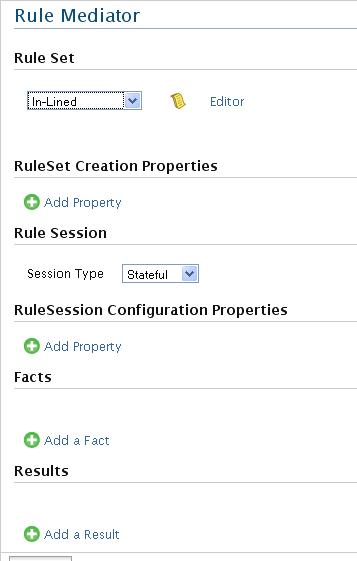

Rule mediator is to integrate WSO2 rules component to the WSO2 ESB in order to bring the capability of rules to define dynamic integration decisions. Figure 1 shows a Rule Mediator UI.
Figure1: Rule Mediator
Each of configuration elements is described in following section.
The source is the only mandatory element of the ruleset. However, the properties required for the creation of the ruleset can also be specified within ruleset. The key attribute is a registry key, which is to lookup the rule script from the registry if the rule script is in the registry. The rule set can be given as a child node of source elemenent. If the rule set is non-XML, you may need to wrap it with a CDATA section inside a XML tag ex: <X><![CDATA[ native code]]></X>
Note : The key or in-lined rule script must be defined. Otherwise, the rule mediator configuration is invalid.
It is possible to exists properties for rules set creation and there is add property options for each.
Example Usage: When using Drool XML language (.xml) for rule script, it is needed to explicitly specify it .This can be done using attribute named 'source' and value 'xml'. This is Drools specific property and you can refer Drools documentation for more information.
<ruleSet>
<creation>
<property name="source" value="xml"/>
</creation>
</ruleSet>
Rule Session specify the stateful or stateless behavior of the rule engine. If this has value 'stateful';, then the rule engine will execute rules in a stateful manner, for any other value , it assumes as stateless. There are optional properties, which are used when creating the rule session. Rule session is optional and the default one is stateful.
Fatcs defines what are the facts that should injected to Rule Engine in order to fire rules whereas results describes what should do with return values form the rule execution.
Figure 2 shows a one senario of addting fact / result
Figure 2 Facts/ of the Rule Mediator
Type : This is the only mandatory field. Fact selector can be used to specify any registered fact types. There are a few built in types such as Message, Context, Map, POJO and Mediator and there are samples using these. Using the rule-component.conf, you can register new types along with adapters, which are responsible for formulating specified types from the data. If there is no registered adapter for a given type, then, we assume the given type as a valid java class name and uses POJO adapter to formulate the POJO instance whose class is the given type.
Name : The name of the fact
Fact Source Type : Can be literal, a registry key or an expression
Value : The registry or Message context key .This is used for getting data from either registry or message context
Registry Browser : If the key is registry resource, the browser to select the resource.
NS Editor : You can click this link to add namespaces if you are providing an expression. You will be provided another panel named 'Namespace Editor' where you can provide any number of namespace prefixes and url
Action : Delete the fact / result
Adding properties option is in RuleSet and RuleSession. Figure 3 shows UI on adding property.

Figure3: Rule Mediator Properties
Name: Name for the property
Value: The type of the property value.
Action: Delete the property